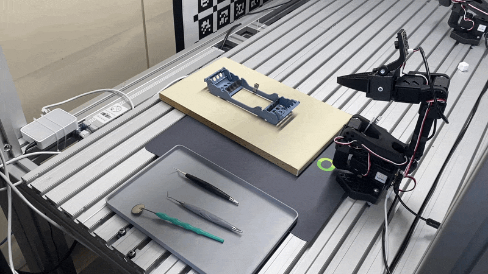
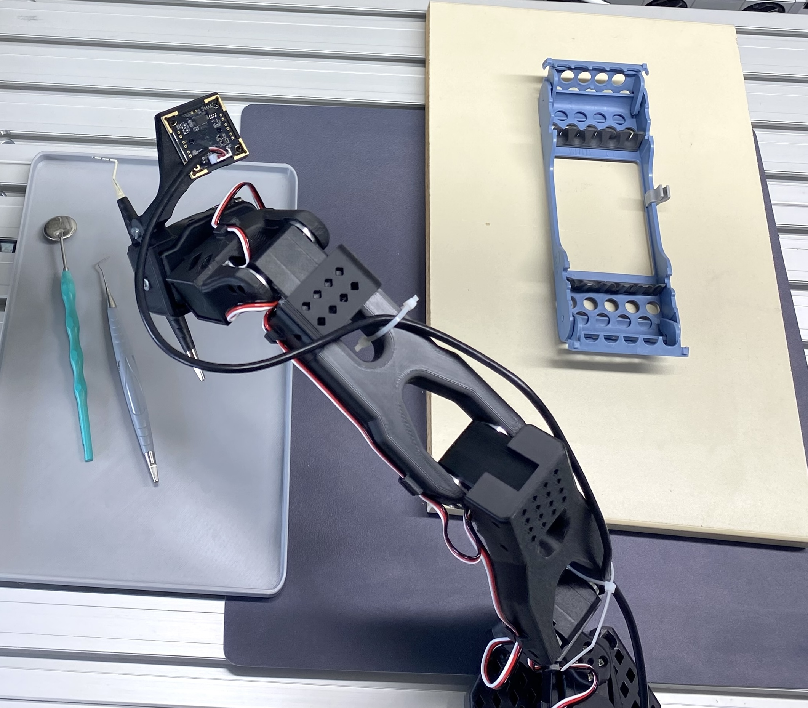
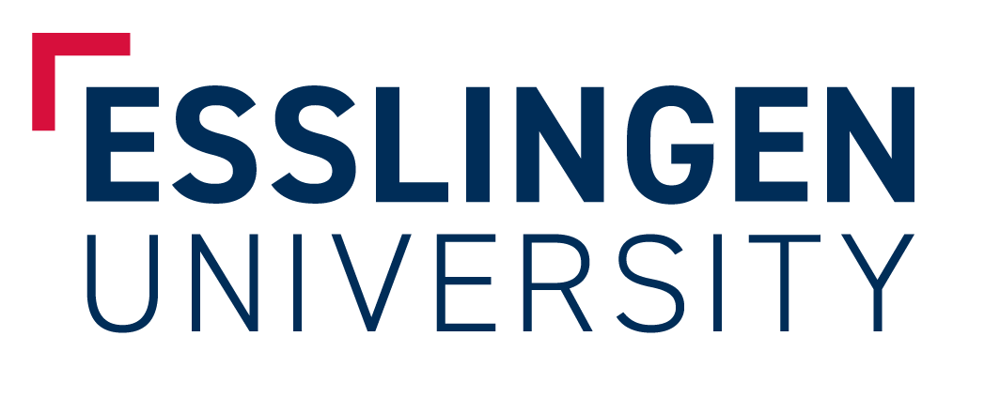
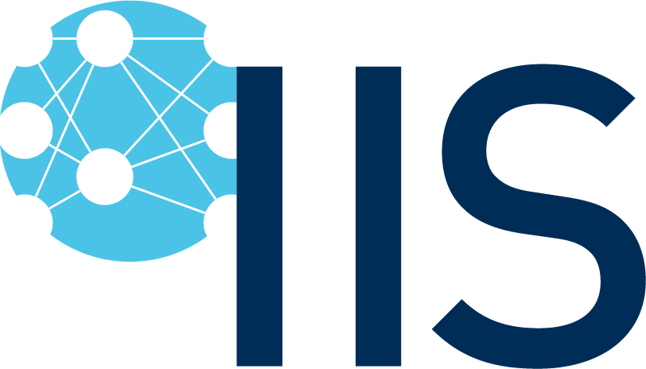

Research project
Collaborative robotics for medical practice.
KoRoMed investigates how foundation models can make collaborative robots useful and safe in medical settings. The project focuses on pre-sorting instruments before sterilisation, a time-consuming and highly regulated task in dental and medical practices. We explore whether vision-language models can recognise instruments, plan actions from natural-language goals, and generate reliable grasping and motion strategies. The research addresses the challenges of limited data, diverse instruments, uncertainty, safety, and real-time operation. By connecting technical development with hygiene requirements and clinical workflows, KoRoMed aims to create practical support for healthcare professionals.

Research progress
Current status
- π0.5 policy
- 311 teleoperation episodes
- Failure and recovery demonstrations
- Semi-flexible 3D-printed gripper
We have fine-tuned π0.5 (training report) on a dataset of 311 teleoperated episodes of dental instrument handling. The dataset includes deliberately introduced failures and subsequent recovery actions, alongside successful task demonstrations. The training data is available on Hugging Face.
We have also replaced the original gripper with a semi-flexible, 3D-printed gripper designed to improve grasping of small dental instruments.
The demonstration above shows the resulting policy controlling a robot arm to place a dental probe into an instrument rack. This laboratory setup provides a basis for evaluating and improving learned instrument-handling skills.
Our ongoing work focuses on implementing a reinforcement learning extension inspired by RECAP and π*0.6. The goal is to improve the policy through additional robot experience and feedback, increasing the success rate and robustness of instrument placement.

Our focus
Human-centred automation
We develop adaptable robotic systems that work alongside staff in space-constrained practices while respecting the demands of hygiene, quality assurance, and safe collaboration.
Project partners

